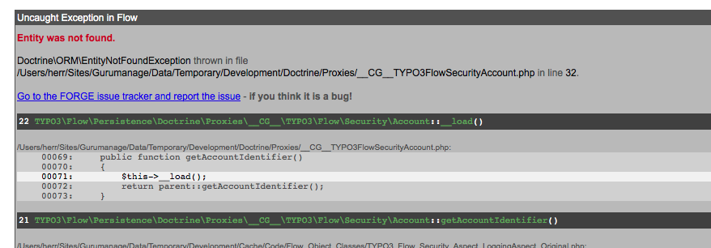

Feature #29907
Redirect to /login instead of raising a "Entity not found." exception if the userdata of an active session has been deleted
| Status: | Resolved | Start date: | 2011-09-16 | |
|---|---|---|---|---|
| Priority: | Must have | Due date: | ||
| Assigned To: | Karsten Dambekalns | % Done: | 100% |
|
| Category: | Security | |||
| Target version: | TYPO3 Flow Base Distribution - 2.1 | |||
| PHP Version: | Complexity: | |||
| Has patch: | No |
Description
If you are logged in into a secured FLOW3 project and delete the corresponding db user (for whatever reasons). There's an exception "Entity not found." raised instead - maybe caused by the invalid cookie data. It would be nicer, if the user would be redirected to the login page defined by "entryPoint:WebRedirect:uri:".
{kind=link}
{kind=link}
{kind=link}
{kind=link}
Related issues
Associated revisions
[BUGFIX] Redirect instead of raising "Entity not found" exception
If you are logged in into a secured Flow project and delete the
corresponding db user (for whatever reasons) an exception "Entity not
found" is raised and not caught.
With this change the exception is caught and instead PolicyEnforcement
will throw an AuthenticationRequiredException, usually calling a
redirect to the configured login page.
Change-Id: I5ae0ae2c174314ceb21ae641cd4ef140ca82efb7
Resolves: #29907
Releases: master, 2.0
[BUGFIX] Redirect instead of raising "Entity not found" exception
If you are logged in into a secured Flow project and delete the
corresponding db user (for whatever reasons) an exception "Entity not
found" is raised and not caught.
With this change the exception is caught and instead PolicyEnforcement
will throw an AuthenticationRequiredException, usually calling a
redirect to the configured login page.
Change-Id: I5ae0ae2c174314ceb21ae641cd4ef140ca82efb7
Resolves: #29907
Releases: master, 2.0
History
#1 Updated by Karsten Dambekalns almost 4 years ago
- Project changed from TYPO3 Flow Base Distribution to TYPO3.Flow
#2 Updated by Karsten Dambekalns almost 4 years ago
- Category set to Security
#3 Updated by Karsten Dambekalns over 2 years ago
- Status changed from New to Needs Feedback
- Assigned To changed from Andreas Förthner to Karsten Dambekalns
- Has patch set to No
Is this solved with #37001 maybe?
#4 Updated by Martin Brüggemann over 2 years ago
- File Bildschirmfoto_2013-01-19_um_12.43.01.png added
- Priority changed from Should have to Must have
This is still a problem. If you are developing doctrine models and working with fixtures, you'll often have to reset the whole database. So please, please, please just redirect to the login-url and kill the session, if the user of the session does not exists in the DB anymore. THIS IS A SHOWSTOPPER FOR BEGINNERS! :(

#5 Updated by Karsten Dambekalns over 2 years ago
- Status changed from Needs Feedback to Accepted
#6 Updated by Gerrit Code Review over 2 years ago
- Status changed from Accepted to Under Review
Patch set 1 for branch master has been pushed to the review server.
It is available at https://review.typo3.org/17683
#7 Updated by Karsten Dambekalns over 2 years ago
- Target version set to 2.1
#8 Updated by Gerrit Code Review over 2 years ago
Patch set 2 for branch master has been pushed to the review server.
It is available at https://review.typo3.org/17683
#9 Updated by Karsten Dambekalns over 2 years ago
- Status changed from Under Review to Resolved
- % Done changed from 0 to 100
Applied in changeset 940f56d124705ba86d13a3ff0bfc48b406b0c42c.
#10 Updated by Bastian Waidelich over 2 years ago
- File Bild_04.03.13_um_11.36.jpg added
- Status changed from Resolved to Needs Feedback
Mh, I still (or again?) get this exception if I log in, reset the db, run migrations and refresh the page (see attachment)
#11 Updated by Bastian Waidelich over 2 years ago
- File Bild_04.03.13_um_11.36.jpg added
Mh, I still (or again?) get this exception if I log in, reset the db, run migrations and refresh the page (see attachment)
#12 Updated by Bastian Waidelich over 2 years ago
Ok, in my case the code that ends up in this exception is:
1protected function initializeAction() { 2 $activeTokens = $this->securityContext->getAuthenticationTokens(); 3 foreach ($activeTokens as $token) { 4 if ($token->isAuthenticated()) { 5 $this->account = $token->getAccount(); 6 $this->party = $this->account->getParty(); 7 } 8 } 9}
When the account does not exist any more, $token->isAuthenticated() still returns TRUE if the token was loaded from the session.
$token->getAccount() is an instance of TYPO3\Flow\Persistence\Doctrine\Proxies\_CG__\TYPO3\Flow\Security\Account_ that throws the \Doctrine\ORM\EntityNotFoundException whenever it is accessed.
I worked around this as follows:
1protected function initializeAction() { 2 $activeTokens = $this->securityContext->getAuthenticationTokens(); 3 foreach ($activeTokens as $token) { 4 if ($token->isAuthenticated()) { 5 $this->account = $token->getAccount(); 6 try { 7 $this->party = $this->account->getParty(); 8 } catch (\Doctrine\ORM\EntityNotFoundException $exception) { 9 $token->setAuthenticationStatus(\TYPO3\Flow\Security\Authentication\TokenInterface::NO_CREDENTIALS_GIVEN); 10 $this->account = NULL; 11 } 12 } 13 } 14}
But this feels rather hacky..
#13 Updated by Gerrit Code Review over 2 years ago
- Status changed from Needs Feedback to Under Review
Patch set 1 for branch 2.0 has been pushed to the review server.
It is available at https://review.typo3.org/19074
#14 Updated by Karsten Dambekalns over 2 years ago
- Status changed from Under Review to Resolved
Applied in changeset 7b1564bfa839be258fe2759491dba5db241d5e08.